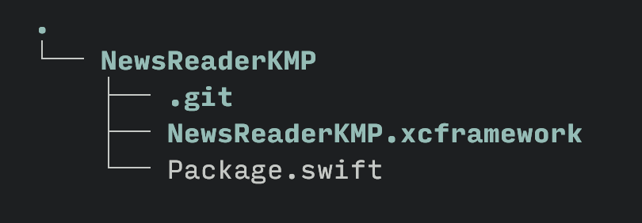

Last Updated: 2024-03-13
After discovering a new, exciting technology or framework, you will probably start asking yourself how to integrate it into an existing project. That's because the possibility of starting with a blank canvas is rare (not impossible, but rare).
This is also the case for Kotlin Multiplatform (KMP), which is getting more and more hype every day. Now that the technology has become stable, it's the perfect time to start using it! In this workshop, we will begin with an existing Android and iOS application that "lives" in separate repositories; we will extract the business logic from the Android app and share it between the two apps with a Kotlin Multiplatform library. We will also cover how to distribute the library to the existing applications. By the end of this workshop, you'll better understand what is needed to start using Kotlin Multiplatform in your existing projects.
What you'll build
In this workshop, you'll work on an existing Android and iOS application called NewsReader
You will:
- Extract the business logic (data and domain layer) from the Android application and make it compatible with Kotlin Multiplatform
- Replace the business logic in the Android and iOS application with the Kotlin Multiplatform library
- Distribute the KMP library locally with Maven and Swift Package Manager
- Distribute the KMP library on Android on GitHub Packages
- Distribute the KMP library on iOS with the Swift Package Manager on GitHub
- Streamline the distribution with KMMBridge
- Improve the iOS Developer experience with SKIE.
What you'll need
- Android Studio with the Kotlin Multiplatform Mobile plugin
- Xcode
- A valid GitHub account.
You can check if your system is ready for Kotlin Multiplatform with kdoctor.
Get the code
You'll find everything you need for this project in a GitHub repository. To get started, clone the following repository: https://github.com/prof18/kmp-existing-project-workshop.
Inside the start folder, you'll find the Android and iOS applications. Feel free to move them to your working directory.
Open the Android Studio and Xcode projects and run the app to ensure everything is all set.
App structure
The application you will work on is a simple news reader application that shows some news from Hacker News. To keep things simple, the source of the news is a hardcoded JSON:
data/Database.kt
internal val newsJson = """
[
{
"by": "Josely",
"id": 39444500,
"score": 497,
"time": 1708452065,
"title": "Keep your phone number private with Signal usernames",
"type": "story",
"url": "https://signal.org/blog/phone-number-privacy-usernames/"
},
...
]
""".trimIndent()
In the domain layer, the NewsRepositoy will simulate a network call, decode the JSON and return a list of News.
domain/NewsRepository.kt
internal class NewsRepository {
private val json: Json = Json {
ignoreUnknownKeys = true
}
suspend fun fetchNews(): List<News> {
delay(1.5.seconds)
return json.decodeFromString<List<NewsDTO>>(newsJson)
.map { it.mapToNews() }
}
private fun NewsDTO.mapToNews(): News =
News(
title = title,
formattedDate = DateFormatter.getStringTime(timeInSeconds = time),
url = url,
)
}
The structure of the iOS application is the same, with the hardcoded JSON and the NewsRepository.
data/Database.swift
let newsJson = """
[
{
"by": "Josely",
"id": 39444500,
"score": 497,
"time": 1708452065,
"title": "Keep your phone number private with Signal usernames",
"type": "story",
"url": "https://signal.org/blog/phone-number-privacy-usernames/"
},
...
]
"""
domain/NewsRepository.swift
class NewsRepository {
func fetchNews() async throws -> [News] {
try await Task.sleep(until: .now + .seconds(2))
guard let jsonData = newsJson.data(using: .utf8) else {
throw ParsingError.invalidJson
}
do {
let news = try JSONDecoder().decode([NewsDTO].self, from: jsonData)
return news.map { mapToNews(dto: $0) }
} catch {
throw error
}
}
func mapToNews(dto: NewsDTO) -> News {
return News(
title: dto.title,
formattedDate: DateFormatterUtil.getStringTime(timeInSeconds: dto.time),
url: dto.url
)
}
}
enum ParsingError: Error {
case invalidJson
}
Let's start by creating a new Kotlin Multiplatform library by using the Kotlin Multiplatform Mobile plugin, available on Android Studio.
Choose a name and a package name, for example NewsReaderKMP and com.example.newsreaderkmp.
Select XCFramework as the iOS framework distribution.
The wizard will automatically generate some code; feel free to delete it.
Migrate from Android to Kotlin Multiplatform
Now we can start migrating some code from the Android app to the newly created library. The code that we'll migrate is the one contained in the data and domain package.
Copy and paste both folders from the Android project to the Kotlin Multiplatform project inside the commonMain source set.
Add missing dependencies
Some additional dependencies for Kotlinx Serialization, and Coroutines need to be added to the Kotlin Multiplatform library.
gradle/libs.versions.toml
[versions]
...
kotlinx-serialization = "1.6.2"
kotlinx-coroutines = "1.7.3"
[libraries]
...
kotlinx-serialization-json = { group = "org.jetbrains.kotlinx", name = "kotlinx-serialization-json", version.ref = "kotlinx-serialization" }
kotlinx-coroutines-core = { group = "org.jetbrains.kotlinx", name = "kotlinx-coroutines-core", version.ref = "kotlinx-coroutines" }
[plugins]
...
kotlinxSerialization = { id = "org.jetbrains.kotlin.plugin.serialization", version.ref = "kotlin" }
shared/build.gradle.kts
plugins {
...
alias(libs.plugins.kotlinxSerialization)
}
kotlin {
sourceSets {
commonMain.dependencies {
implementation(libs.kotlinx.serialization.json)
implementation(libs.kotlinx.coroutines.core)
}
...
}
}
...
build.gradle.kts
plugins {
...
alias(libs.plugins.kotlinxSerialization).apply(false)
}
After a Gradle sync, you will be ready to move forward.
Change package name
From the Android project, package names have changed, so you'll need to change them; replace com.example.newsreader with com.example.newsreaderkmp. You can do it manually or with Option+Enter (Option+Enter driven development ftw üòÄ).
Change class visibility
In the Android project, the NewsRepository, and the News class were marked as internal. The NewsRepository will be the entry point for the KMP library, so you need to remove the internal modifier from those classes.
Implement platform-specific Date Formatter.
The last step in having a working library is implementing the DateFormatter. The code you copy-pasted before won't work out of the box because it uses java.util and java.text code inside the commonMain source set. In this source set, only "pure" Kotlin code is allowed.
To access platform-specific APIs, you can leverage the expected and actual declarations.
Replace the code in shared/DateFormatter.kt with
internal expect object DateFormatter {
fun getStringTime(timeInSeconds: Long): String
}
If you see a warning on the expect keyword, don't worry, it's because expect/actual classes are still in Beta. Such functionality won't be dropped, but there could be some tweaking in the future because the design is a bit complicated
You can suppress the warning by adding the following code in the kotlin block of the shared/build.gradle.kts file.
kotlin {
@OptIn(ExperimentalKotlinGradlePluginApi::class)
compilerOptions {
freeCompilerArgs.add("-Xexpect-actual-classes")
}
}
Now you can write the actual implementation with platform-specific code. Again, you can leverage Option+Enter Driven Development ™️ and let the IDE automatically generate some code for you.
Select the source sets where you want to create the actual declarations, in this case, androidMain and iosMain.

Move to the newly created domain/DateFormatter.android.kt file and add the code previously copied from the Android project
import java.text.SimpleDateFormat
import java.util.Date
import java.util.Locale
internal actual object DateFormatter {
actual fun getStringTime(timeInSeconds: Long): String {
val formatter = SimpleDateFormat("d MMM yyyy", Locale.getDefault())
return formatter.format(Date(timeInSeconds * 1000))
}
}Now, you need to do the same for iOS. Move to domain/DateFormatter.ios.kt and add the following platform-specific code.
import platform.Foundation.NSDate
import platform.Foundation.NSDateFormatter
import platform.Foundation.NSLocale
import platform.Foundation.currentLocale
import platform.Foundation.dateWithTimeIntervalSince1970
internal actual object DateFormatter {
actual fun getStringTime(timeInSeconds: Long): String {
val date = NSDate.dateWithTimeIntervalSince1970((timeInSeconds.toDouble()))
val articleDateFormatter = NSDateFormatter().apply {
setLocale(NSLocale.currentLocale)
setDateFormat("d MMM yyyy")
}
return articleDateFormatter.stringFromDate(date)
}
}
In this case, you are accessing the platform libraries (NSDate, for example) that the Kotlin/Native compiler is automatically linking. Those platform libs are just wrappers and bindings to the native libraries.
Congrats! You now have a ready-to-be-used Kotlin Multiplatform library. In the next section, you will learn how to use it in the Android and iOS applications.
Publish to Maven Local
The first step in publishing a KMP library is trying it locally. To do so, you will use the Maven Local repository.
To publish Maven packages, you need to use the Maven Publish Plugin. Add the plugin ID to the shared/build.gradle.kts file.
plugins {
...
id("maven-publish")
}You also need to define a group and a version name for the library that you will publish
shared/build.gradle.kts
version = "0.0.1"
group = "com.example.newsreaderkmp"The last required step is ensuring that both the Android library's debug and release flavor will be published.
shared/build.gradle.kts
kotlin {
androidTarget {
...
publishAllLibraryVariants()
}
}
To publish the library on Maven Local, run the publishToMavenLocal Gradle task.
Add the KMP library on the Android app.
To add the newly published library to the Android app, you must first add mavenLocal() to the project repositories. Go to the settings.gradle.kts file of the Android project and add mavenLocal().
dependencyResolutionManagement {
repositoriesMode.set(RepositoriesMode.FAIL_ON_PROJECT_REPOS)
repositories {
mavenLocal()
google()
mavenCentral()
}
}
Now, the library can be added as a dependency in the app/build.gradle.kts file.
implementation("com.example.newsreaderkmp:shared:0.0.1")
After a Gradle sync, you can now use the library! Start by deleting all the code in the data and domain package. You also need to adjust the package name of the imports from com.example.newsreader to com.example.newsreaderkmp. The files that need to be adjusted are MainViewModel, UiState, and MainActivity in the presentation package.
Congrats! üéâ
You now have an Android app that uses a Kotlin Multiplatform library.
Publish to GitHub packages
Having the library published locally is not a scalable solution, especially if you work in a team. The alternative is to publish the library in an "internet-accessible" Maven registry. This could be a company internal one or a "public" one that lets you publish private libraries, like Repsy or GitHub Packages. We will use GitHub Packages for simplicity, but you can replace them with the provider of your choice.
The first step is creating a GitHub repository and pushing the KMP library you created in the previous step.
After pushing it, it's necessary to add some configuration in the shared/build.gradle.kts file to start publishing the library.
publishing {
repositories {
maven {
name = "GitHubPackages"
url = uri("https://maven.pkg.github.com/username/repoName")
credentials {
username = providers.environmentVariable("GITHUB_USER").get()
password = providers.environmentVariable("GITHUB_TOKEN").get()
}
}
}
} In the URL above, replace username with your GitHub username and repoName with the name of the repository you've previously created.
To use GitHub packages, you need a personal access token (classic) (More info here). You need to create a token (click here to create one) and then provide it with your GitHub username in the above configuration. The token needs to have a read:packages,
write:packages, and repo scope to be able to publish a package (you won't need the read scope here, but you will need it afterward on the Android project to download the library)
You can avoid committing your credentials by placing them on the environmental variables or in the local properties of the project.
Store credentials on local properties
To store the credentials in the local properties, open the local.properties file and add the following
github.user=your-username
github.token=your-tokenUpdate the publishing configuration:
val properties = Properties()
properties.load(project.rootProject.file("local.properties").inputStream())
publishing {
repositories {
maven {
name = "GitHubPackages"
url = uri("https://maven.pkg.github.com/username/repoName")
credentials {
username = properties.getProperty("github.user")
password = properties.getProperty("github.token")
}
}
}
}
Store credentials on environmental variables
The environment variables can be set in the ~/.zshrc file:
export GITHUB_USER="<your-username>"
export GITHUB_TOKEN="<your-token>"After setting them, remember to reload the file:
source ~/.zshrcTo ensure the environment variables are set correctly, restart Android Studio.
Update the publishing configuration:
publishing {
repositories {
maven {
name = "GitHubPackages"
url = uri("https://maven.pkg.github.com/prof18/NewsReaderKMPWorkshop")
credentials {
username = providers.environmentVariable("GITHUB_USER").get()
password = providers.environmentVariable("GITHUB_TOKEN").get()
}
}
}
}Publish to GitHub Packages
After all this setup, you're ready to publish the library on GitHub packages. To do so, you need to run the following Gradle tasks.
./gradlew publishKotlinMultiplatformPublicationToGitHubPackagesRepository publishAndroidDebugPublicationToGitHubPackagesRepository publishAndroidReleasePublicationToGitHubPackagesRepositoryThe first task will publish the Gradle module metadata required to make Gradle understand which platform you are asking for. Without that, you must specify the dependency as com.example.newsreaderkmp:shared-android:0.0.1 instead of simply com.example.newsreaderkmp:shared:0.0.1.
The other two tasks are self-explanatory and will publish the library's debug and release flavor.
There is also a simpler publish task that will publish everything automatically. However, in this case, we are not publishing a KMP library for another KMP project; instead, we are publishing a KMP library to be used in a native application. So we don't need all the platforms, but just the Android library (in this way, we can also save some quotas on GitHub).
After running the tasks mentioned above, your GitHub repository will look like this:

You have published your library and are now ready to import it into the Android project!
Add the KMP library on the Android app.
To use the newly published KMP library, you must first update the repository in the settings.gradle.kts file. Delete the mavenLocal entry (or comment it out; the purpose is to ensure that Gradle will pick up the library from GitHub Packages and not the local one) and replace it with the following configuration.
dependencyResolutionManagement {
repositoriesMode.set(RepositoriesMode.FAIL_ON_PROJECT_REPOS)
repositories {
google()
mavenCentral()
maven {
name = "GitHubPackages"
url = uri("https://maven.pkg.github.com/username/repoName")
credentials {
username = providers.environmentVariable("GITHUB_USER").get()
password = providers.environmentVariable("GITHUB_TOKEN").get()
}
}
}
}
As you did previously, in the URL above, replace username with your GitHub username and repoName with the name of the repository where you published the package (or copy and paste the URL from the previous configuration üòÄ).
Congrats! üéâ
You now have an Android app using a Kotlin Multiplatform library from a GitHub Package.
As mentioned above, you will use an XCFramework to distribute the KMP library to the iOS app.
Build an XCFramework
As you may remember, you already choose to have an XCFramework as the iOS framework distribution in the wizard while creating the KMP library. The wizard automatically created some configuration in the shared/build.gradle.kts file.
kotlin {
...
val xcf = XCFramework()
listOf(
iosX64(),
iosArm64(),
iosSimulatorArm64()
).forEach {
it.binaries.framework {
baseName = "shared"
xcf.add(this)
isStatic = true
}
}
...
}Let's customise the name of the framework, so the import on Swift will look more insightful.
kotlin {
...
val xcf = XCFramework("NewsReaderKMP")
listOf(
iosX64(),
iosArm64(),
iosSimulatorArm64()
).forEach {
it.binaries.framework {
baseName = "NewsReaderKMP"
xcf.add(this)
isStatic = true
}
}
...
}
To build the XCFramework, run the following Gradle task
./gradlew assembleNewsReaderKMPXCFrameworkThe tasks will build a release and a debug version of the XCFramework. To build only a debug version, run the assembleNewsReaderKMPDebugXCFramework task, and for a release-only version, run the assembleNewsReaderKMPReleaseXCFramework task.
The XCFramework will be placed in the shared/build/XCFrameworks/release/NewsReaderKMP.xcframework folder.
Now, the XCFramework needs to be imported into Xcode. To do so, you will use the Swift Package Manager.
Publish the XCFramework locally with Swift Package Manager
As with Android, we will first publish the KMP library locally. To distribute a library in the iOS world, we can use different dependency managers: CocoaPods, Carthage, or Swift Package Manager.
We will use Swift Package Manager.
Swift Package Manager is based on git, and a package is a git repository with semantically versioned tags that contains Swift sources or a binary and a Package.swift manifest file at its root.
So, to create a new package, you need to create a new git repository, for example, called NewsReaderKMP, move the NewsReaderKMP.xcframework from the build folder (shared/build/XCFrameworks/release) and create a Package.swift file.
// swift-tools-version:5.9
import PackageDescription
let package = Package(
name: "NewsReaderKMP",
platforms: [
.iOS(.v14),
],
products: [
.library(
name: "NewsReaderKMP",
targets: ["NewsReaderKMP"]
),
],
targets: [
.binaryTarget(
name: "NewsReaderKMP",
path: "./NewsReaderKMP.xcframework"
),
]
)
In this file, the metadata of the package are defined. For example, it's possible to specify the platform you want to target, the product (i.e., the artifact that will be available to the clients of the package), and the targets (i.e., from where the product will be assembled). A target can simply be source code or a binary, like in our case.
The structure of the package will look like this:

After creating the git repository and the Package.swift file, you are ready to commit your changes and tag the commit.
git add .
git commit -m "Release 0.0.1"
git tag 0.0.1Import a local Package in Xcode
To load a local Package in the Xcode project, open the Add Package Dependencies menu from File
Select the Add Local button
locate the local package in the file chooser
and add it to the project
You can see now the Package correctly imported in the Project Navigator

Congrats! üéâ
You have imported a Kotlim Multiplatform library into an iOS project!
Replace Swift code with the KMP library
At this point, you need to replace all the code inside the data and domain group with the KMP library. Select and delete those folders (remember to select Move to Trash and not Remove References).
After deleting the folders, you only need to import the KMP library. Add import NewsReaderKMP on the imports of the presentation/ContentView.swift, presentation/MainViewModel.swift, presentation/UIState.swift and NewsReaderApp.swift files.
Build and run the app, and congrats! üéâ
You now have an iOS app that is using a Kotlin Multiplatform library from a local Swift Package.
Publish the XCFramework on GitHub with Swift Package Manager
Again, having the library published locally is not a scalable solution especially if you are working in a team.
As mentioned above, Swift Package Manager is based on git, so you can simply push the newly created package into a GitHub repository.
Create a new repository on your GitHub account and push all the changes, tags included.
Go back on Xcode, navigate to the Package Dependencies menu (you can navigate to it by clicking on NewsReader in the Project Navigator, then again on NewsReader in the Project section, and then on the Package Dependencies tab), and delete the local package dependency.
Now, you can click the + button and add the package published on GitHub. Simply paste the repository URL in the search box, and Xcode will find the package.
After adding the package, build and rerun the app. Congrats! üéâ
The iOS app now uses a Kotlin Multiplatform library from a Swift Package published on GitHub.
Potential Issues
This approach of publishing the binaries in a repository is straightforward, but it could lead to some struggles when the size of the repository increases. Xcode will start having performance issues when the repository approaches 5GB, which seems like a considerable number, but it's not if you consider the different published architectures.
https://x.com/kpgalligan/status/1723364386046173493?s=20
This issue can be overcome by zipping the XCFramework and placing it somewhere on the Internet. That's because the Swift Package Manager supports having targets as zip files that can be retrieved from a URL.
However, to do so, you need some infrastructure to store the zip file of your framework safely (and most likely privately). As always, in the software industry, you can build the infrastructure or use some existing ones.
The next section will explore and try an existing solution to streamline the framework distribution.
KMMBridge is a tool published by Touchlab to facilitate publishing a consuming Kotlin Multiplatform XCFramework binaries. It lets you publish the binaries to different private or public artifact managers like Maven, GitHub Packages, S3, JetBrains Spaces, Artifactory, and consume them by either CocoaPods or Swift Package Manager.
KMMBridge makes it possible to easily use GitHub as a place to host the XCFramework as a zip file without growing the size of the repository and hence hitting the issue above-mentioned. That's because KMBridge will use the Maven repository provided by GitHub packages to store the zip file.
KMMBridge will then automatically create a Package.swift file that will contain the URL of the XCFramework upload to the Maven repo. In this way, you can import the git repository of the KMP library as a Swift Package in the iOS project.
Let's see how KMMBridge can be used to publish the KMP library on GitHub Packages using GitHub Actions.
Add KMMBridge on the KMP library
First thing first, we need to add the KMMBridge Gradle plugin
gradle/libs.versions.toml
[versions]
...
kmmbridge = "0.5.2"
[plugins]
...
kmmbridge = { id = "co.touchlab.kmmbridge", version.ref = "kmmbridge" }
shared/build.gradle.kts
plugins {
...
alias(libs.plugins.kmmbridge)
}
build.gradle.kts
plugins {
...
alias(libs.plugins.kmmbridge).apply(false)
}
After a Gradle sync, you will be ready to move forward.
We need to modify the Gradle configuration we made before because KMMBridge will handle it automatically for us.
Remove the XCFramework configuration in the shared/build.gradle.kts file.
From this:
kotlin {
...
// delete the following line
val xcf = XCFramework()
listOf(
iosX64(),
iosArm64(),
iosSimulatorArm64()
).forEach {
it.binaries.framework {
baseName = "shared"
// delete the following line
xcf.add(this)
isStatic = true
}
}
...
}To this:
kotlin {
...
listOf(
iosX64(),
iosArm64(),
iosSimulatorArm64()
).forEach {
it.binaries.framework {
baseName = "shared"
isStatic = true
}
}
...
}Add the following property in the gradle.properties
gradle.properties
LIBRARY_VERSION=0.1 where 0.1 is the major and the minor number of the version. KMMBridge will automatically increase and keep track of the patch number starting from 0. So, the first version that will be published in this setup will be 0.1.0. The new version number will be automatically put inside a new Gradle property called AUTO_VERSION.
In the shared/build.gradle.kts file, you need now to read the version number from the Gradle properties instead of hardcoding it.
version = project.property(
if (project.hasProperty("AUTO_VERSION")) {
"AUTO_VERSION"
} else {
"LIBRARY_VERSION"
}
) as String
group = "com.example.newsreaderkmp.workshop"
And you'll need to add some Gradle configuration to enable publishing your library with KMMBridge.
shared/build.gradle.kts
addGithubPackagesRepository()
kmmbridge {
mavenPublishArtifacts()
spm()
}mavenPublishArtifacts() tells the plugin to push KMMBridge artifacts (the zip file mentioned above) to a Maven repo.
addGithubPackagesRepository() instead automatically configures the Maven repository for publishing the Android library by inferring the parameters that are passed in from the GitHub Action. You can then delete the publishing block that you defined previously while publishing the Android library to GitHub Packages
shared/build.gradle.kts
// Remove the entire block
publishing {
repositories {
maven {
name = "GitHubPackages"
url = uri("https://maven.pkg.github.com/username/repoName")
credentials {
username = providers.environmentVariable("GITHUB_USER").get()
password = providers.environmentVariable("GITHUB_TOKEN").get()
}
}
}
} The publishing flow is managed with a GitHub action. Let's create a new GitHub action workflow in the KMP library.
.github/workflows/publish-all.yml
name: Publish All
on:
workflow_dispatch:
# push:
# branches:
# - "main"
jobs:
call-kmmbridge-publish:
permissions:
contents: write
packages: write
uses: touchlab/KMMBridgeGithubWorkflow/.github/workflows/faktorybuildautoversion.yml@v1.1
with:
jvmVersion: 17
versionBaseProperty: LIBRARY_VERSION
publishTask: kmmBridgePublish publishKotlinMultiplatformPublicationToGitHubPackagesRepository publishAndroidDebugPublicationToGitHubPackagesRepository publishAndroidReleasePublicationToGitHubPackagesRepository
This action will be triggered manually and it will publish a new version of the XCFramework with the kmmBridgePublish task and the Android version with the publishKotlinMultiplatformPublicationToGitHubPackagesRepository, publishAndroidDebugPublicationToGitHubPackagesRepository and publishAndroidReleasePublicationToGitHubPackagesRepository tasks (those should sounds familiar since are the same that we used above when publishing the Android library).
After committing and pushing all the changes, you can trigger and start the GitHub action
Use the KMP library on Android
After the action finishes, you can first check that the Android project will work with the new release of the library. Remember to bump to version number
app/build.gradle.kts
implementation("com.example.newsreaderkmp.workshop:shared:0.1")Setup binary access
GitHub Packages require authentication for accessing files in all repos, public or private.
You must add a ~/.netrc file or Mac Keychain Access authentication info for Swift Package Manager to grab the binary.
~/.netrc file
Add the following lines to the ~/.netrc file:
machine maven.pkg.github.com login githubUsername password githubTokenwhere githubUsername is your GitHub username and githubToken is your GitHub token.
Mac Keychain Access
Instead of creating an entry in the ~/.netrc file, it's possible to use the Mac Keychain Access to store the credentials.
Create a new Password item
with the following information:
- Keychain Item Name: https://maven.pkg.github.com/
- Account Name: githubUsername
- Password: githubToken
where githubUsername is your GitHub username and githubToken is your GitHub token.
Xcode will automatically use the credentials stored in the Keychain Access to get the binary artifacts.
Use the KMP library on iOS
To use the newly published library, you need to delete the previous Package and add the new dependency.
Navigate to the Package Dependencies menu (you can navigate to it by clicking on NewsReader in the Project Navigator, then again on NewsReader in the Project section, and then on the Package Dependencies tab), and delete the previously added package dependency.
Now, you can click the + button and add the package published on GitHub. Simply paste the repository URL into the search box, and Xcode will find the package.
After adding the package, build and rerun the app. Congrats! üéâ
The iOS app now uses the Package published with KMMBridge.
Another exciting feature of KMMBridge is the possibility to locally build and test the framework without having to manually publish it like you've done previously in the "Publish the XCFramework locally with Swift Package Manager" section.
To do so, run the following Gradle task in the Kotlin Multiplatform library project:
./gradlew spmDevBuild -PspmBuildTargets=ios_simulator_arm64This will build only the simulator version. If you want to test your app on a real device, you can run the task without passing any parameters.
This task will autogenerate a Package.swift file inside the KMP project. Remember to delete it when you're done with the local testing.
To replace the published package with the local one, simply drag and drop the root folder of the KMP project inside Xcode. Xcode will automatically replace the "remote" version with the local one. Be aware that the folder's name must have the same name as the GitHub repository, otherwise the replace will fail.
When you're done with testing, you can delete the local package, and Xcode will automatically replace it with the remote one. Remember to select Remove Reference otherwise the entire KMP library project will be moved to the trash.
Remember also to delete the Package.swift file that was created inside the KMP project.
Add Kotlin breakpoints in Xcode
With this local setup and the Xcode Kotlin plugin, you will be able to add breakpoints in the Kotlin code and debug it directly from Xcode!
You can install the plugin with brew
brew install xcode-kotlinClose Xcode and activate the plugin with
xcode-kotlin installAfter installing the plugin, open Xcode, open a Kotlin class from the local package and add a breakpoint. Run the app, and voila', you are debugging Kotlin inside Xcode!
To debug locally the KMP library on Android there are two possibilities.
The first one is deploying a new version on Maven locally every time. This approach works, but you need to wait for the deployment (even though it's quick, it's still time that you need to wait), and you need to be sure that Gradle picks up the newest version of the library.
The other method that overcomes such issues is using Gradle Composite builds. This feature of Gradle gives the possibility of including a Gradle project inside another Gradle project. In this way, you can import the KMP library inside your Android project, work on the KMP library, and immediately have the changes reflected on the Android project without doing anything.
To do so, open the settings.gradle.kts file inside the Android project and add the following configuration:
includeBuild("../NewsReaderKMPWorkshop") {
dependencySubstitution {
substitute(module("com.example.newsreaderkmp.workshop:shared")).using(project(":shared"))
}
}
where "../NewsReaderKMPWorkshop" is the path to the KMP library project. With this configuration, instead of the com.example.newsreaderkmp.workshop:shared dependency, the Gradle module shared in the "../NewsReaderKMPWorkshop" path will be used.
After a Gradle sync, if you modify something in the KMP library and run the Android app, your changes will be immediately available.
Kotlin/Native provides bidirectional interoperability with Objective-C. During the translation from Kotlin to Objective-C to Swift, some of the Kotlin language features (that are also supported by Swift) are lost because Objective-C does not support them.
For example, there are no default arguments, the enums are not Swift-friendly, sealed classes are just simple classes, coroutines don't support cancelations, and flows are not supported.
For those reasons, some APIs exposed by Kotlin to Swift will not look appealing because they lack important language features.
While waiting for the official interoperability with Swift, the community created some tools to overcome those issues.
For example, KMP-NativeCoroutines adds support for cancellation on Coroutines and enables the usage of Coroutines and Flow on Swift with Swift Concurrency, Combine, or RxSwift.
Another interesting tool is SKIE, a compiler plugin that generates Swift code to fix the abovementioned issues (flows, coroutine cancellation, default arguments, enum, sealed classes).
Add SKIE
To add SKIE to the Kotlin Multiplatform library, you just need to add the Gradle plugin.
gradle/libs.versions.toml
[versions]
...
skie = "0.6.1"
[plugins]
...
skie = { id = "co.touchlab.skie", version.ref = "skie" }
shared/build.gradle.kts
plugins {
...
alias(libs.plugins.skie)
}
build.gradle.kts
plugins {
...
alias(libs.plugins.skie).apply(false)
}
And that's it. When you build the XCFramework, SKIE will automatically generate the Swift code that will be linked to the final XCFramework generated by Kotlin Multiplatform.
After publishing another version of the KMP Library, the loadNews method in the MainViewModel.swift class will fully support cancelation!
presentation/MainViewModel.swift
func loadNews() async {
do {
let newsList = try await newsRepository.fetchNews()
uiState = UiState.success(newsList: newsList)
} catch {
print(error)
uiState = UiState.error(message: error. localizedDescription)
}
}
Congratulations, you've successfully integrated Kotlin Multiplatform into an existing Android and iOS application.
You are now equipped with the knowledge to successfully create and distribute a Kotlin Multiplatform library to Android and iOS.
Sample project:
The sample project includes an end folder with two final workspaces: one that manually deploys the KMP library on GitHub and one that it deploys it with KMMBridge.
Resources
- Publishing Java packages with Gradle
https://docs.github.com/en/actions/publishing-packages/publishing-java-packages-with-gradle - Gradle Maven deploy failing with 422 Unprocessable Entity #26328
https://github.com/orgs/community/discussions/26328#discussioncomment-3251485 - How to allow unauthorised read access to GitHub packages maven repository? #26634
https://github.com/orgs/community/discussions/26634 - Creating a multiplatform binary framework bundle
https://developer.apple.com/documentation/xcode/creating-a-multi-platform-binary-framework-bundle - Binary Frameworks in Swift
https://developer.apple.com/videos/play/wwdc2019/416/ - Binary Frameworks in Swift
https://devstreaming-cdn.apple.com/videos/wwdc/2019/416h8485aty341c2/416/416_binary_frameworks_in_swift.pdf - Build final native binaries
https://kotlinlang.org/docs/multiplatform-build-native-binaries.html#build-xcframeworks - Distributing binary frameworks as Swift packages
https://developer.apple.com/documentation/xcode/distributing-binary-frameworks-as-swift-packages - KMP-NativeCoroutines
https://github.com/rickclephas/KMP-NativeCoroutines - SKIE
https://skie.touchlab.co/ - SKIE Migration Guide
https://touchlab.co/skie-migration?ti=4B0F129C5D944E54B60B31FE35 - Interoperability with Swift/Objective-CÔªø
https://kotlinlang.org/docs/native-objc-interop.html - ​​Kotlin/Native as an Apple framework
https://kotlinlang.org/docs/apple-framework.html - Kotlin-Swift interopedia
https://github.com/kotlin-hands-on/kotlin-swift-interopedia - Writing Swift-friendly Kotlin Multiplatform APIs
https://medium.com/@aoriani/list/writing-swiftfriendly-kotlin-multiplatform-apis-c51c2b317fce - Dependency Management in iOS
https://blog.devgenius.io/dependancy-management-for-ios-27dd681d7ea0 - multiplatform-swiftpackage
https://github.com/luca992/multiplatform-swiftpackage - KMMBridge
https://github.com/touchlab/KMMBridge - KMMBridge Quick Start
https://touchlab.co/kmmbridge-quick-start - Xcode 13.3 supports SPM binary dependency in private GitHub release
https://medium.com/geekculture/xcode-13-3-supports-spm-binary-dependency-in-private-github-release-8d60a47d5e45 - Xcode Kotlin - Xcode support for Kotlin browsing and debugging
https://touchlab.co/xcodekotlin